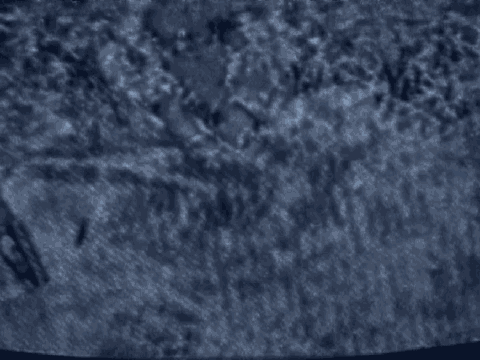

25 front of the jury in that case, in the case of United States
8340
1 v. Omar Rezaq?
2 A. That is correct.
3 Q. Did you ever make clear in the article that you published
4 in that journal that in fact you never testified?
5 A. I indicated that I was assisting the prosecution. I did
6 not indicate I testified in the article.
7 Q. Did you write the statement, "The other prosecution
8 experts would demonstrate that Rezaq was legally sane but it
9 was my task to provide a sense-making explanation for the jury
10 of how an individual who was sane could commit such a bloody
11 atrocity"? Is that correct?
12 A. That is correct.
13 Q. How many members of Al Qaeda have you interviewed?
14 A. One.
15 Q. Just Mr. Odeh, correct?
16 A. Correct.
17 Q. You were asked questions before about Omar Abdel Rahman
18 and Ramzi Yousef. Is it fair to say you did not interview
19 them?
20 A. Eminently fair. I would be delighted to have the
21 opportunity.
22 Q. Do you know a person named Jamal Ahmed al-Fadl?
23 A. No.
24 Q. Do you know who he is?
25 A. No.
8341
1 Q. Do you know a person named Kherchtou l'Houssaine, L
2 apostrophe H-O-U-S-S-A-I-N-E?
3 A. Is that the Hussein in this case?
4 Q. Yes.
5 A. I don't know him.
6 Q. No, no, not the Hussein -- do you know, aside from the
7 Hussein discussed with Khalfan as the person who approached
8 him about the jihad job, do you know a person named Kherchtou
9 l'Houssaine?
10 A. No.
11 Q. Do you know who he is?
12 A. No.
13 Q. Do you know a person by the name of Abu Ubaidah al
14 Banshiri?
15 A. When you say no --
16 Q. Do you know who he is?
17 A. I need to understand the context. Why don't you tell me
18 what the person's role was.
19 Q. I am just asking you, do you recognize the name, Abu
20 Ubaidah al Banshiri?
21 A. I am not terrific with names.
22 Q. Madani al Tayyib?
23 A. No.
24 Q. Do you know a person named Ayman al Zawahiri, A-Y-M-A-N al
25 Z-A-W-A-H-I-R-I?
8342
1 A. Were you to place these in context my answer might be yes.
2 Just by the name, I do not recognize them.
3 Q. Let's talk for a moment about the process of the interview
4 with Mr. Odeh. Is it fair to say you interviewed Mr. Odeh
5 once?
6 A. Yes.
7 Q. How long did the interview take?
8 A. Half an hour, 45 minutes.
9 Q. Is it fair to say that the government was not invited to
10 participate in that interview?
11 A. Of course.
12 Q. Is it fair to say the government was not told about the
13 interview in advance?
14 A. I don't know. No, I don't believe that is the case, in
15 fact, because we had to clear seeing him for me to be able to
16 see him, with the court.
17 Q. Do you know if the prosecution team was told about the
18 interview in advance?
19 A. I don't know.
20 Q. Certainly no one was invited to participate, correct?
21 A. Nor were they invited to participate when I talked to the
22 defendant. That would be most unusual.
23 Q. When you went in, and we will talk about that in a moment,
24 to see Mr. Odeh, did you do a recording of the interview,
25 audiotape or videotape?
8343
1 A. No.
2 Q. Did you take notes?
3 A. Yes, I did.
1